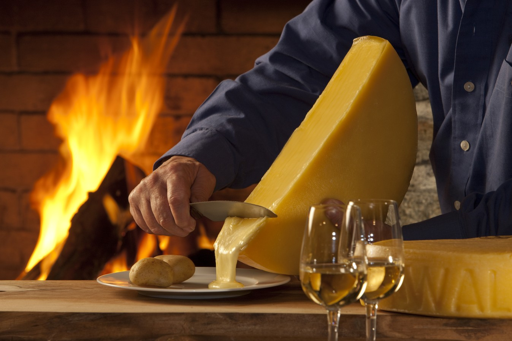
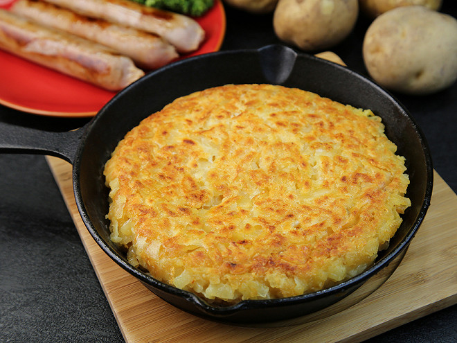
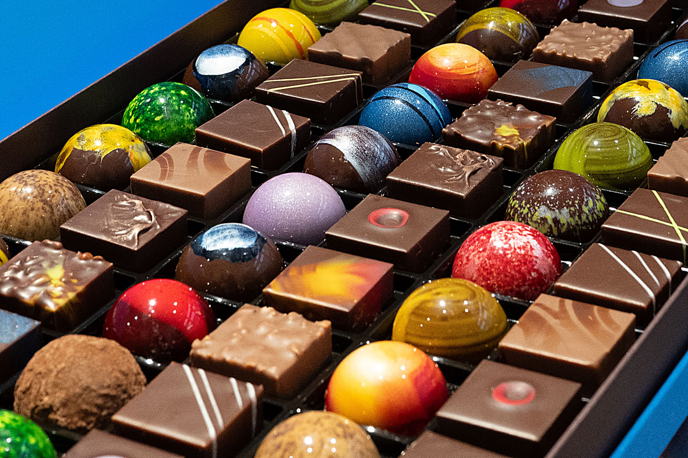
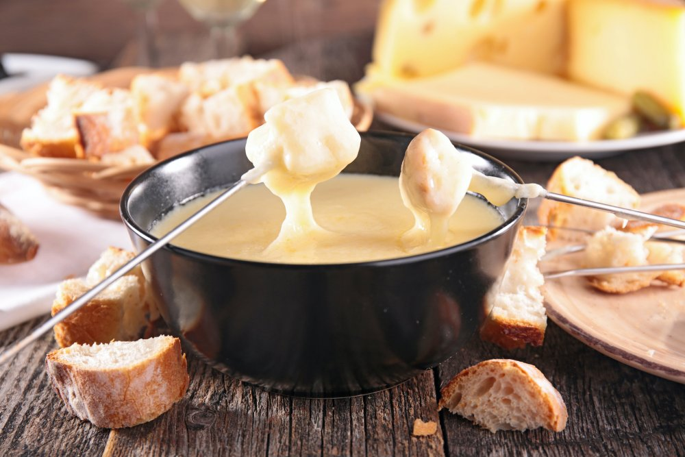

Gastronomie
Accueil
Lieux touristiques
Gastronomie
Sports
Voici la nouriture typiquement Suisse et/ou très célèbre en Suisse

La raclette ce si bon plat

Le rosti fait parti de aussi parti de la gastronomie Suisse

Le Chocolat suisse pour tout les gout

La meilleur de toutes les fondues, celle au fromage suisse